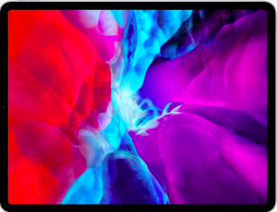

Ваш будущий компьютер
теперь не компьютер.
Это удивительное устройство, которое творит чудеса. И справляется с задачами быстрее многих ноутбуков. У него две камеры уровня Pro, которые позволяют менять реальность. Им можно управлять с помощью касаний или использовать для этого карандаш, клавиатуру, а теперь и трекпад. Это новый iPad Pro.
Более продвинутый мобильный дисплей
можно
даже
не искать.
Технология Liquid Retina Дисплей Liquid Retina от края до края — это не просто впечатляющее изображение, а ещё и невероятно продвинутые технологии.1 Например, ProMotion, True Tone, сверхточная цветопередача. Вот почему всё выглядит настолько поразительно и реагирует на ваши действия так молниеносно. Проще говоря, такое сочетание качеств означает: перед вами необычайно продвинутый мобильный дисплей.
- сверхточная цветопередача
- Технология ProMotion
- минимум бликов
- Технология True Tone
- широкий цветовой охват